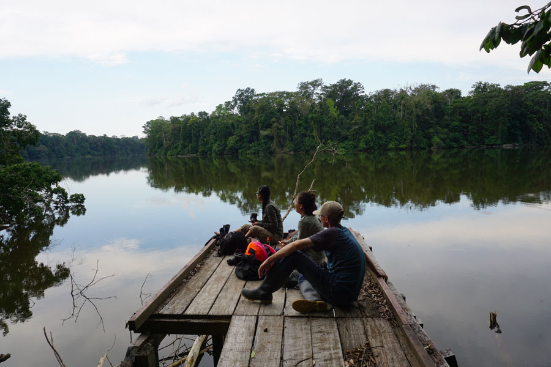
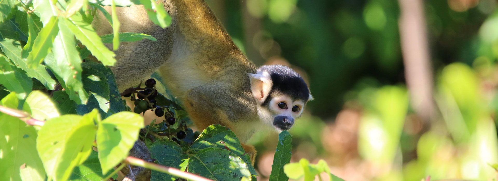
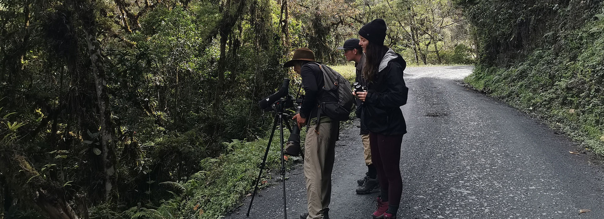
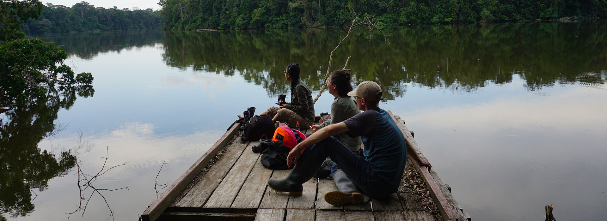
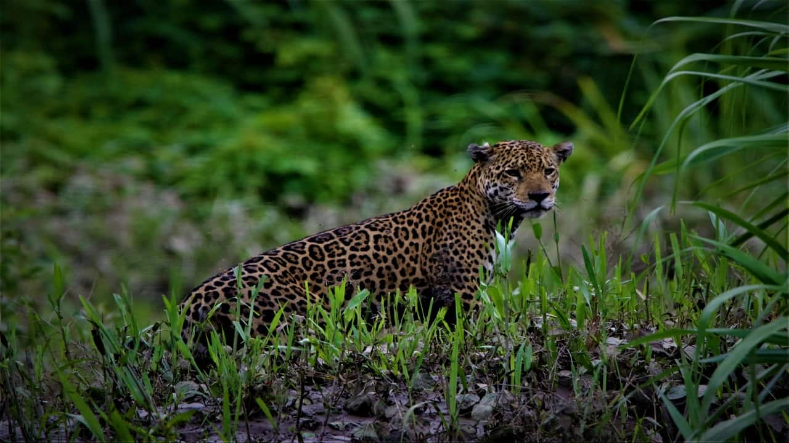

Cusco, Peru · Manu National Park
What Will
You Discover?
Visit Manu National Park from Cusco — guided jungle tours deep into the Peruvian Amazon. Local. Wild. Authentic.

Visit Manu National Park with a Local Company
Going to the Amazon rainforest is a dream for many travelers planning their South American adventure. If you're looking for an amazing jungle trip near Cusco, Peru, you're in the right place.
The Manu National Park is accessible by road and river from Cusco, located on the Madre de Dios and Manu rivers — tributaries to the Amazon itself. Our founder grew up in the small village of Nuevo Eden that we use as our base; the rainforest is his home.
We offer multi-day guided small-group tours and can also organize independent trips to Manu. All our jungle tours can be added onto your Cusco trip while visiting Machu Picchu and the Sacred Valley. You will get a taste of local life and opportunities to see amazing creatures in their natural habitat.
Our Tours: Something for Everyone
We have thoughtfully created our jungle trips for travelers with different budgets, interests, and timeframes. For maximum wildlife viewing: the Wildlife Tour is for you. If you want to visit local villages on a budget: the Road Trip was made for you. The Expedition is for adventure seekers who want to travel deep into the jungle, learn survival skills, and get far from civilization.

Jungle Wildlife Tour
Manu National Park tours from Cusco where you travel by van through the cloud forest, then search for Peruvian Amazon animals by boat. See caimans, macaws, capybaras, and the elusive jaguar. Beautiful scenery, local food, incredible nature — appropriate for all travelers.
Explore This Tour

Rainforest Road Trip · Details
Our most authentic Peru Amazon tour takes you through villages along the winding road from Cusco to Manu. Spot animals in the cloud forest, taste local flavors, and visit hidden gems. Great for small, adventurous groups on a budget. Not available December–March (rainy season).
Manu Expedition · Details
Perfect for adventurous nature lovers — this expedition takes you deep into the forest. Camp, fish, hike, and learn survival skills. Travel by van through the cloud forest, by boat along riverbanks, then hike deep into the jungle wearing rubber boots. Our experienced local team organizes everything.
All Tours Include
Transport by private van and/or boat · All meals and snacks · Drinking water · Rubber boots · Bilingual guide (Spanish & English) · Accommodation in jungle lodges · Days full of adventure in the Peruvian Amazon.

WHAT MAKES US UNIQUE?
We are a family-run, local company that only operates in Manu. Our lodge and paths in Nuevo Eden are on the land where Moises (co-founder) grew up. We believe that tourism is the safest, most sustainable industry for the rainforest, and our goal is to use tourism to support the community and wildlife in the surrounding area. Without this effort, this precious land would be in danger to logging and destructive agriculture. We are passionate about the region, the wildlife, and the culture of the Manu National Park.

Wildlife in the Peruvian Rainforest
The Manu National Park is the best place to see wildlife in Peru — you will always encounter animals in their natural habitats, surrounded by a complex ecosystem. When we visit the Amazon rainforest, we explore trails looking for monkeys, macaws, insects, snakes, and more. On the river banks we search for capybaras, turtles, caimans, and even the elusive jaguar.
Jaguar
Macaws
Caimans
Monkeys
Giant Otters
River Turtles
Capybaras
Anaconda
Butterflies
Cock-of-the-Rock
Google Reviews
Let's Go to the Jungle. Plan Your Trip Today.
Contact us and we'll build your perfect jungle adventure — whether a 3-day wildlife tour or a 6-day deep Amazon expedition. We reply within 24 hours.